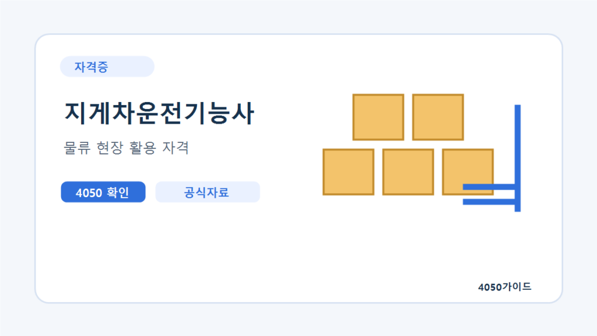

지게차운전기능사 국비지원 신청방법 실습시간 비용과 면허 확인
고용24에서 지게차운전기능사 과정을 검색해 본인 조건의 자비부담과 실습을 확인한 뒤 수강신청을 진행하세요. 가장 중요한 비교는 총 수업시간이 아니라 실제로 한 사람이 운전하는 시간입니다. 훈련 수료, 자격시험 합격, 조종사면허 발급은 서로 다른 단계입니다.
카드 발급부터 수강신청까지
- 국민내일배움카드 발급 가능 여부와 계좌 유효기간·잔액을 확인합니다. 실업 상태라면 필요한 구직신청을 진행합니다.
- 고용24 훈련 통합검색에서 지게차운전기능사, 통근 가능한 지역과 기간으로 찾습니다.
- 필기 포함반인지 실기만 하는 반인지, 기관·회차·실습장 위치를 확인합니다.
- 자비부담액과 추가 연습비, 개인 운전시간을 기관에 문의합니다.
- 해당되는 훈련 진단·상담, 수강신청과 기관 선발·등록·카드 결제를 마칩니다.
140시간 이상 과정은 수강신청 전 훈련 진단·상담 안내를 확인하세요. 학원에 전화한 상태나 관심 과정 저장은 등록 완료가 아닙니다. 고용24 지원 과정인지 확인하지 않고 일반 수업을 먼저 결제하지 마세요.
훈련기관에 물어볼 실습 질문
| 항목 | 구체적인 질문 | 확인 이유 |
|---|---|---|
| 운전시간 | 한 사람이 실제 조작하는 시간은 총 얼마인가요? | 시연·대기 시간을 분리 |
| 장비·인원 | 장비 몇 대를 몇 명이 어떤 순서로 쓰나요? | 대수보다 개인 사용 기회 |
| 코스·안전 | 공개문제에 맞는 연습과 안전지도를 하나요? | 시험·현장 안전 습관 준비 |
| 강사·보충 | 시험 및 현장 경험, 결석 보충·추가 연습비는? | 지도 범위와 전체 비용 비교 |
| 시험 연계 | 수료일과 지역 시험 접수·응시 시점이 맞나요? | 수료 뒤 장기간 공백 방지 |
시험비와 수강료를 따로 계산하세요
확인한 Q-Net 안내의 필기 수수료는 14,500원, 실기는 25,200원으로 한 번씩 응시하면 합계 39,700원입니다. 수강료나 면허 발급비까지 포함한 총액은 아닙니다. 재응시·추가 연습·교통비와 작업복·작업화 등 준비 비용을 따로 확인하세요.
Q-Net은 필기 60문항 60분, 실기 작업형 약 4분, 필기·실기 각각 60점 이상을 안내합니다. 필기와 실기 준비를 구분하고 최신 공개문제·출제기준·지참준비물을 확인하세요. 상세 페이지에 정기 일정이 없다고 시험 자체가 없다는 뜻으로 해석하지 말고 상시검정의 지역·회차별 접수 가능 일정을 확인합니다.
수료증과 자격증, 조종사면허는 다릅니다
일반 검정형 대비반 수료만으로 기능사 자격이 발급되지는 않습니다. 정부24는 자격시험 합격자 등이 건설기계조종사면허증을 별도로 신청하는 절차를 안내합니다. 기능사 취득 뒤 필요한 면허·신체검사 등 서류를 관할 발급기관에서 확인하세요. 3톤 미만 교육을 통한 소형건설기계 경로도 기능사 시험 준비와 같지 않습니다.
초보 지원 공고는 운전 외 업무까지 읽습니다
물류센터·창고·제조업 중 초보 지원 가능 여부와 경력 우대 여부를 나눠 봅니다. 지게차 가능자라는 문구에 피킹·상하차·포장·재고관리까지 포함되는지, 야외·야간·교대근무와 출퇴근 교통이 가능한지도 확인하세요. 자격증과 실제 운전 숙련도는 다르므로 인수인계와 안전교육이 있는지 질문합니다.

자주 묻는 질문
필기에 합격했는데 필기·실기 종합반을 들어야 하나요?
실기반을 따로 비교할 수 있습니다. 본인의 필기 면제기간과 실기 응시 계획을 확인하고, 기관에 실제 운전시간과 훈련 종료 후 시험까지의 간격을 물어보세요.
수강료가 무료면 39,700원의 시험비도 지원되나요?
훈련비와 시험 수수료는 별개입니다. 과정에 포함됐는지 기관에 확인해야 하며, 재응시나 추가 연습·이동 비용도 별도로 계산하세요.
기능사 합격증만 있으면 바로 현장에서 운전할 수 있나요?
기능사 취득과 건설기계조종사면허 발급은 구분해야 합니다. 장비 종류에 필요한 면허와 현장 안전교육·작업 조건을 발급기관 및 사업장에 확인하세요.
공식 자료와 확인일
2026년 10월 19일 확인한 자료와 편집자의 준비 제안을 구분해 정리했습니다. 개인별 계약·지원 자격·처리 결과는 해당 기관에서 확인하세요.